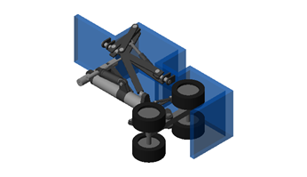
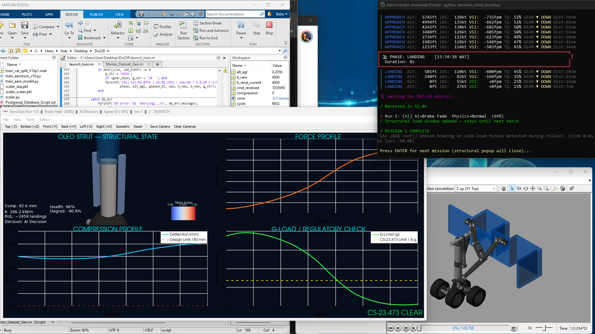
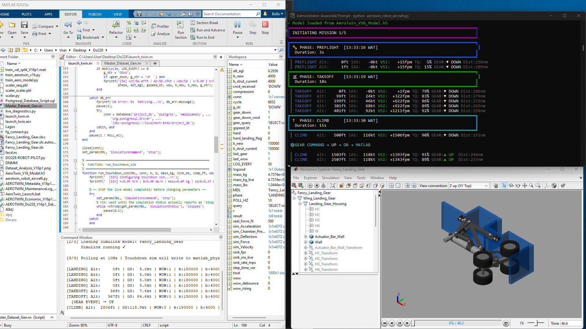
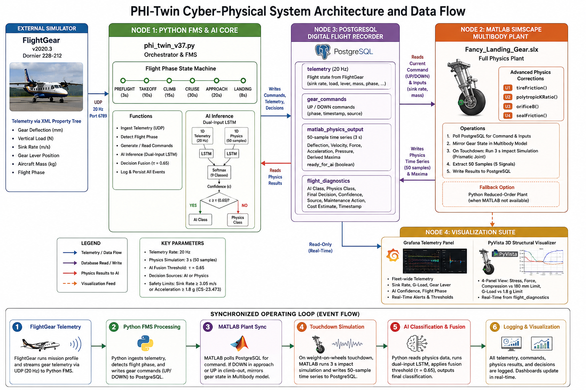

Physics-informed edge inference fusing sensor telemetry with structural models — built to flag what's wearing before it becomes what's grounded.
Most landing gear health monitoring still leans on scheduled teardown inspection — safe, but blind to the time between inspections. PHI-Twin runs continuously instead, fusing multi-channel sensor data through a physics-informed neural architecture that's learned what normal wear looks like versus what a developing fault looks like, and flags the difference in milliseconds, at the edge, without a round-trip to the cloud.
We validated the approach on a Dornier 228-212 airframe model across eleven distinct fault classes, and the architecture is built to generalize to other gear-equipped platforms.
Full model architecture, training methodology, and dataset composition are reserved for OEM and institutional partners under NDA — this page covers what the system does, not how it's built.




Independent validation, flight test data, or certification pathway guidance would move PHI-Twin from lab-proven to field-proven faster than we can do it solo.
Talk to us about validationThis is being built in the open. The strip below reflects real progress, pulled live — no one's editing this copy to make it look further along than it is.
Want to help build this? Join the project →